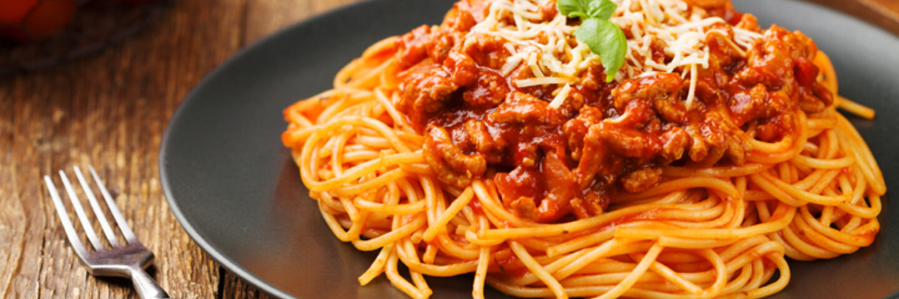

Home
Peppa Pig's Spaghetti

Description
A delicious spaghetti recipe inspired by Peppa Pig's love for spaghetti. This recipe is perfect for a hearty meal and is sure to satisfy your cravings.
Ingredients
- 1 lb spaghetti noodles
- 1 lb ground beef
- 1 onion, chopped
- 2 cloves garlic, minced
- 1 can (28 oz) crushed tomatoes
- 1 can (6 oz) tomato paste
- 1 tsp dried basil
- 1 tsp dried oregano
- Salt and pepper to taste
Instructions
- Cook the spaghetti noodles according to package instructions.
- In a large skillet, brown the ground beef and drain excess fat.
- Add the onion and garlic to the beef and cook until softened.
- Stir in the crushed tomatoes, tomato paste, basil, oregano, salt, and pepper. Simmer for 20 minutes.
- Serve the sauce over the cooked spaghetti noodles.